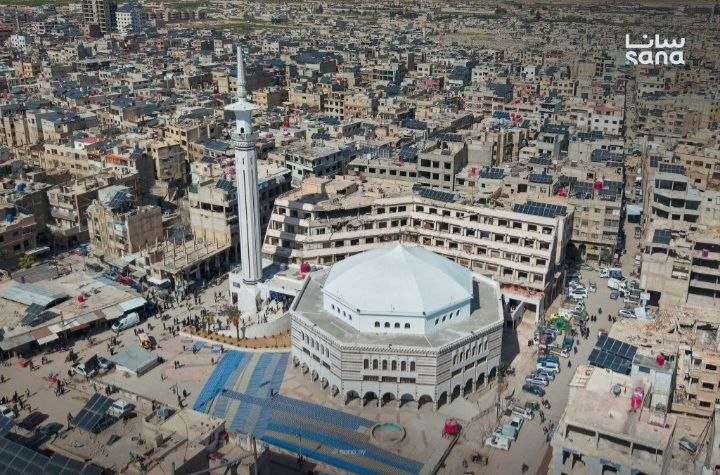
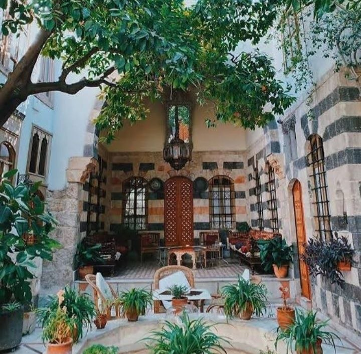
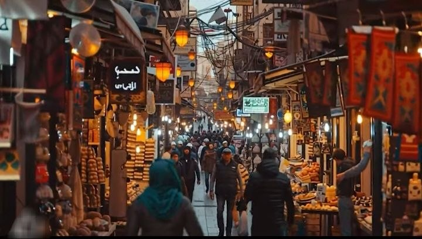
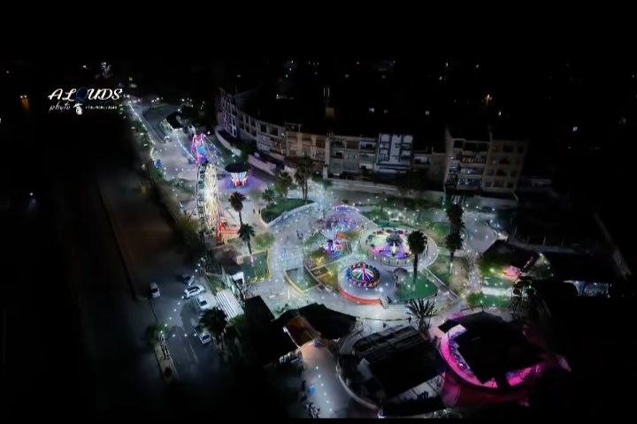
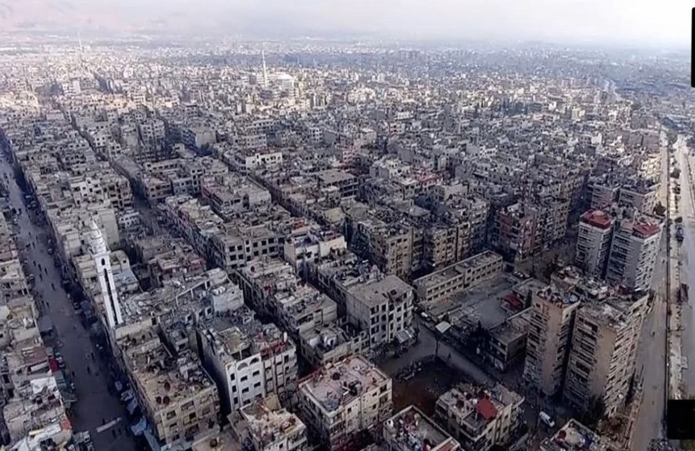
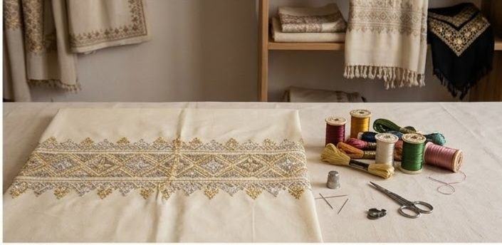
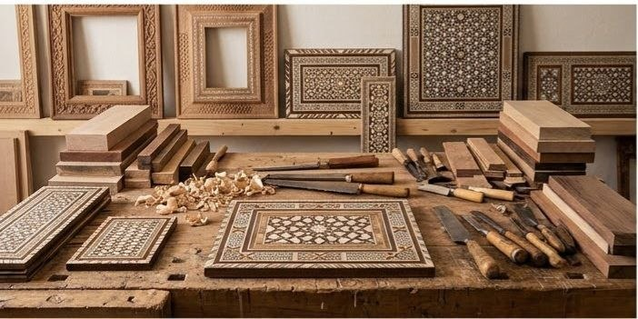
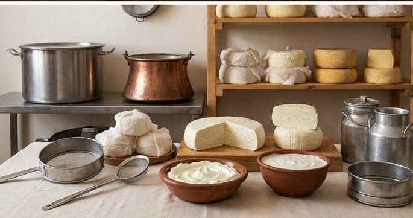
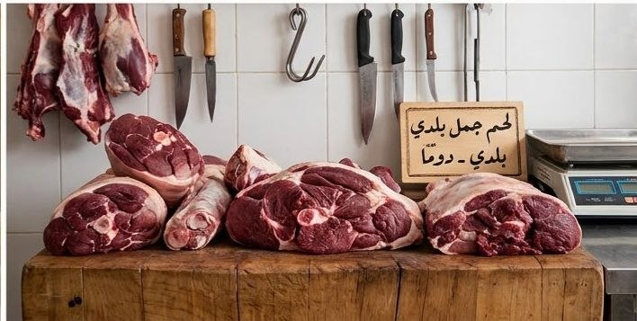

دوما و التراث العريق
استكشف روعة العمارة الدمشقية القديمة، المساجد التاريخية، والأسواق العتيقة عبر جولات افتراضية ثلاثية الأبعاد وخريطة سياحية تفاعلية تدعم التراث والمحليين.
تعرف على أبرز الشواخص المعمارية والتاريخية التي تميز مدينة دوما وبلدات ريف دمشق.

احد ابرز المعالم الدينية ةالتاريخية في الغوطة الشرقية بريف دمشق ويمثل قلبا نابضا لمدينة دوماورمزا لهويتها

تحفة معمارية وهندسية صمم ليكون واحةمنالخوصية والراحة والجمال وعرف تاريخيا باسم البيت العربي

هو العصب التجاري النابض للمدينة والمناطق المحيطة بها ويمتاز بازدحامه الدائمومحلاته التجارية المتنوعة

المكان الترفيهي الاكبر والاشهر للاهالي والاطفال في الغوطة الشرقيةوتمثل رمزا لعودة الحياة والبهجة الى المدينة

اختر مساراً سياحياً مقترحاً واكتشف أهم المحطات والمواقع الأثرية في دوما وريف دمشق.
يشمل المسجد الكبير، الأسواق القديمة، والبيوت العريقة.
جولة بين بساتين الغوطة الشرقية العريقة ومعالم الريف الدمشقي.
زيارة ورش الحرفيين التقليدية، التطريز، والصناعات اليدوية.
ادعم الحرفيين المحليين في دوما وريف دمشق باقتناء المنتجات اليدوية الأصيلة.

الحرفي:اب محمد

الحرفي:اب مازن

الحرفي:اب عامر

الحرفي:اب اناصر